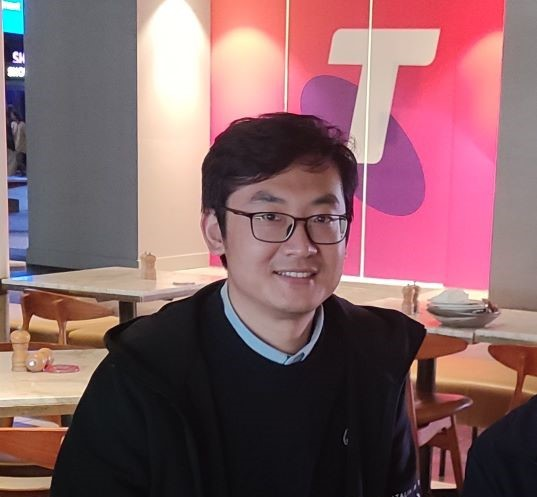

I am an Associate Professor at Ocean University of China. My
research focuses on multimedia forensics and computer vision. I have
published numerous top-tier papers with
a total of

I was a Senior Research Scientist at University at Buffalo, SUNY, working with Siwei Lyu (SUNY Distinguished Professor). I was a summer intern at GE glocal research center during 2016 - 2018. I received Ph.D. degree in computer science at University at Albany, SUNY in 2020, advised by Siwei Lyu (IEEE/IAPR/AAIA Fellow). I received M.S. degree in 2015 and B.S. degree in 2012 at Shandong University.
📢 Opening! Currently I am leading the Visual Analysis & Security (VAS) Lab. Our lab has multiple openings. Please drop me an email if you are interested in internship / M.S. program. I also advise the POVA Group , which focuses on underwater computer vision reserach. Drop me an email if you are interested.
🎉 News
- [2025.07]: We have released Celeb-DF++ benchmark, an extension of earlier Celeb-DF dataset. 📌 📌
- [2026.04]: Three works [AVPF, DAF, ReVi] on deepfake detection and image manipulation localization are released at ArXiv. New!
- [2026.04]: I have been elected as a CCF Senior Member. New!
- [2026.03]: One paper on active deepfake defense is accepted by TIFS 2026. New!
- [2026.02]: One paper on optical flow estimation is accepted by CVPR 2026. New!
- [2025.11]: Three master students are awarded an enterprise scholarship (¥2w). Congratulations!
- [2025.10]: One paper on domain adaptation is accepted by TIP 2025.
- [2025.10]: I gave a talk on advances on visual forensics PRCV 2025.
- [2025.09]: Elected among World's Top 2% Scientists 2025 by Stanford University.
- [2025.07]: One paper on proactive deepfake detection is accepted by TDSC 2025.
- [2025.05]: One paper on underwater stereo matching is accepted by TCSVT 2025.
- [2025.03]: One paper on image manipulation detection is accepted by ICME 2025.
- [2025.02]: Two papers on deepfake detection are accepted by CVPR 2025.
- [2025.02]: The work of TSOM is elected as WACV 2025 Oral.
- [2025.01]: I gave a talk on face forensics in the wild at CSIG Young Scholars forum.
- [2024.11]: One paper on phytoplankton tracking is accepted by TCSVT.
- [2024.11]: Awarded BMVC outstanding reviewer.
- [2024.10]: One paper on sequential deepfake detection is accepted by WACV.
- [2024.09]: One paper on deepfake detection is accepted by NeurIPS.
- [2024.09]: Elected among World's Top 2% Scientists 2024 by Stanford University.
- [2024.09]: One paper on quality-agnostic deepfake detection is accepted by ACCV.
- [2024.08]: One paper on 3D adversarial meshes are accepted by PG.
- [2024.07]: Two papers on image manipulation detection are accepted by BMVC.
- [2024.07]: One paper on transferable deepfake detection is accepted by IEEE TIFS.
- [2024.07]: One paper on generalizable deepfake detection is accepted by ECCV.
- [2024.05]: One paper on multi-face deepfake detection is accepted by IEEE TCSVT.
- [2024.04]: One paper on deepfake detection is accepted by IEEE TIFS.
- [2024.04]: One paper on deepfake defense is accepted by IEEE TETC.
- [2024.04]: One paper on image-text retrieval is accepted by ICMR.
- [2024.02]: One paper on image-text retrieval is accepted by KBS.
- [2024.01]: One paper on deepfake defense is accepted by CVIU.
- [2023.12]: One paper on adversarial robustness is accepted by ICASSP.
- [2023.11]: I gave a talk at a forum in CSIG ChinaFMS conference 2023.
- [2023.10]: One paper on adversarial robustness is accepted by CVIU.
- [2023.07]: I gave a talk at a forum in CCF CFTC 2023 on Recent Advances on CV Security.
- [2023.06]: One ICME paper entitled Forensics Forest is selected as Oral.
- [2023.05]: A dataset on phytoplankton observation is accepted by JMSE.
- [2023.05]: One paper on Semantic Segmentation is accepted by IEEE TNNLS.
- [2023.04]: One paper on Universal Domain Adaptation is accepted by IEEE TCSVT.
- [2023.03]: Two papers on DeepFake defense are accepted by ICME.
- [2023.02]: One paper on Transferable Adversarial Attack is accepted by COSE.
- [2022.12]: I gave a talk at CCBR 2022 on Recent Advances on AI Security.
- [2022.11]: One paper on DeepFake detection is accepted by Pattern Recognition.
- [2022.08]: I gave a tutorial at MIPR 2022 on DeepFake Creation, Detection and Obstruction.
- [2022.07]: I gave a tutorial at ICME 2022 on DeepFake creation and detection.
- [2022.07]: One paper on face synthesis is accepted by PRL.
- [2022.06]: One paper on DeepFake defense is accepted by ICIP.
- [2022.06]: One paper on DeepFake detection is accepted by Pattern Recognition.
- [2022.05]: One paper on DeepFake detection is accepted by MIPR.
- [2022.02]: One book chapter is publised on Handbook of Digital Face Manipulation and Detection, Springer.
- [2021.12]: One book chapter is publised on Deep Learning-Based Face Analytics, 2021. Springer.
- [2021.10]: One paper on adversarial attack is accepted by CVIU 2021.
- [2021.08]: One paper on scene parsing is accepted by TNNLS 2021.
- [2021.08]: I gave a tutorial at IJCB 2021 on Trustworthy Biometrics.
- [2021.07]: One paper on backdoor attack is accepted by ICCV 2021.
- [2021.06]: With my PhD advisor Prof. Siwei Lyu, I gave a tutorial at ICASSP 2021 on DeepFake Generation and Detection [Part 1] [Part 2] [Part 3].
- [2021.06]: We are releasing DeepFake Game Competition (DFGC) dataset [Here]
- [2021.05]: We are holding DeepFake Game Competition (DFGC) [Here]
- [2021.03]: One paper on DeepFake-o-meter is accepted by SADFE in conjunction with the IEEE S&P 2021
- [2021.02]: One paper is accepted by ICASSP 2021.
- [2020.02]: Our paper on Celeb-DF is accepted by CVPR 2020.